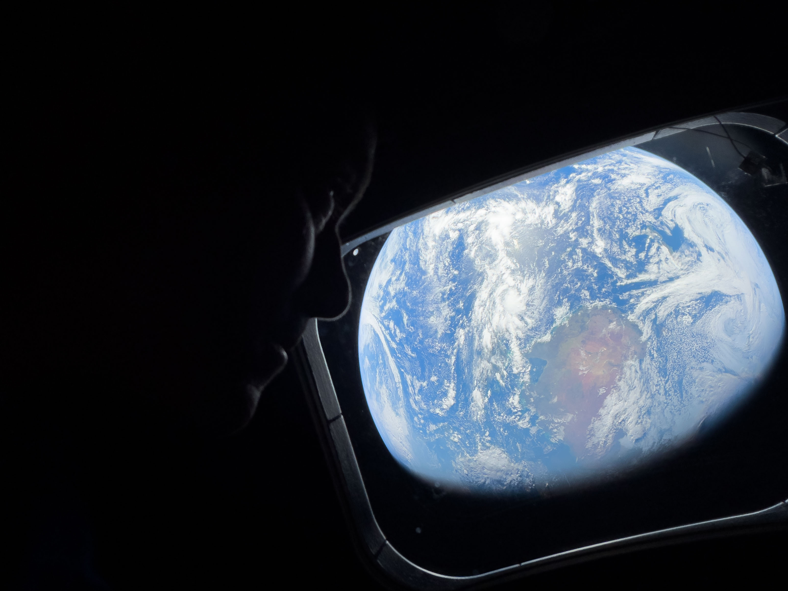
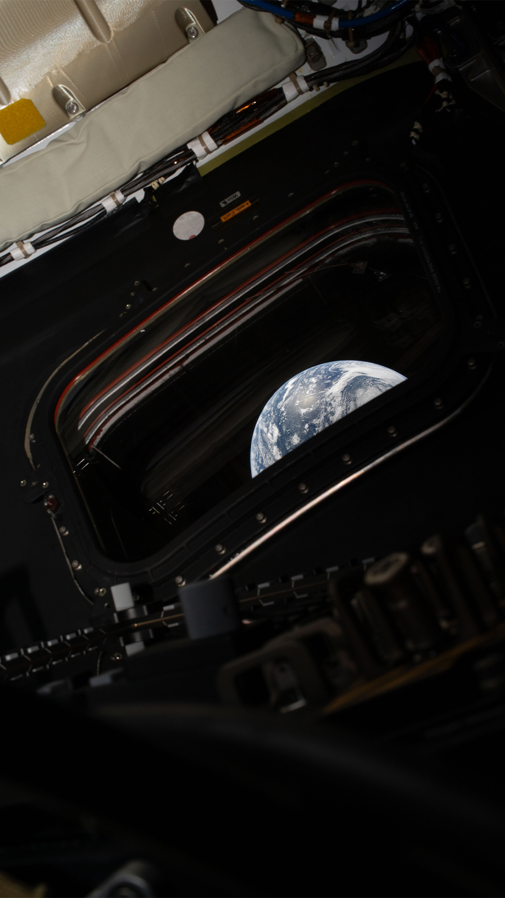
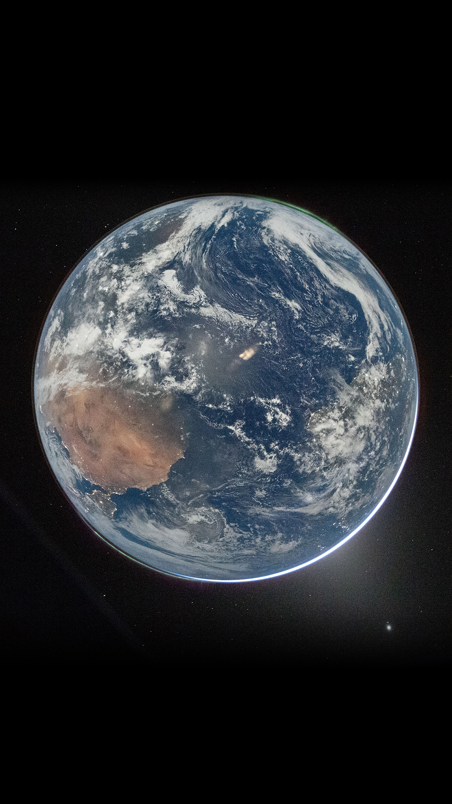
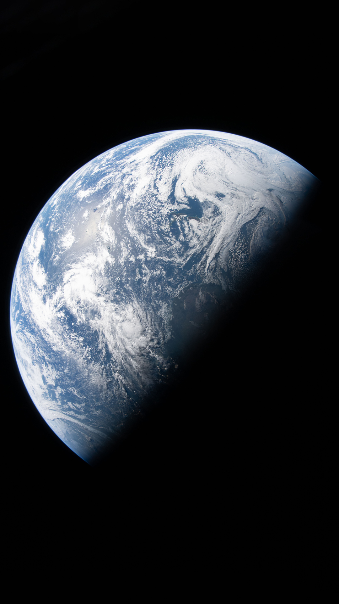
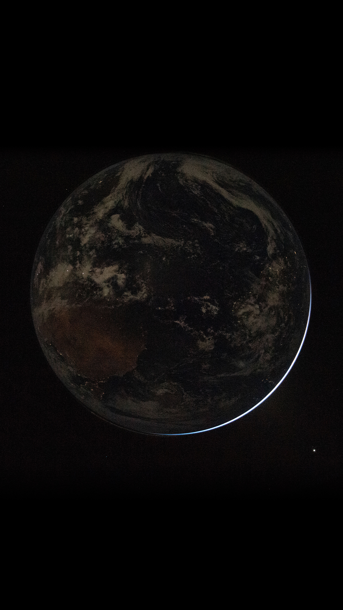
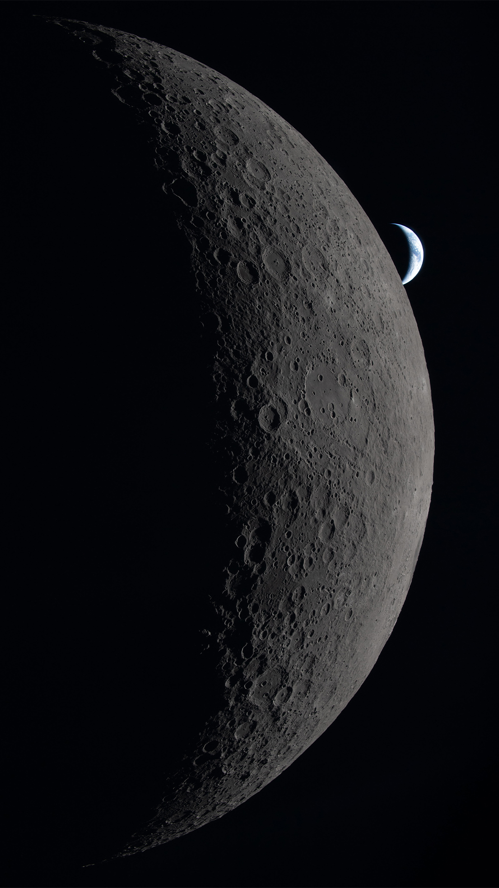
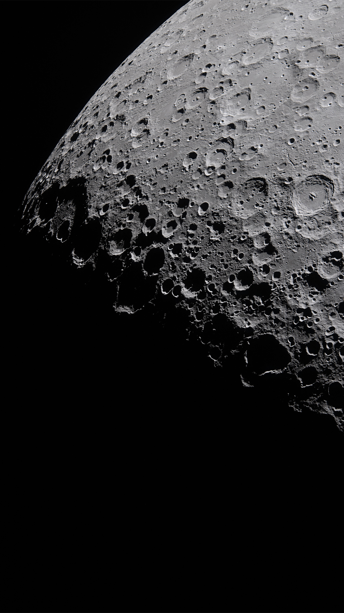
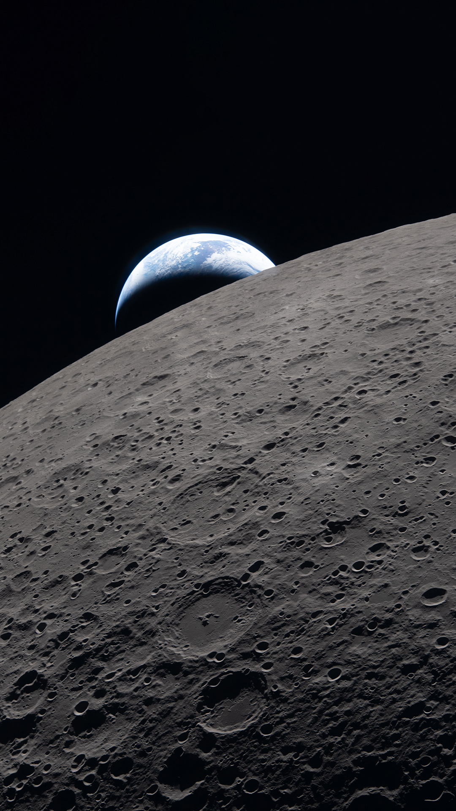
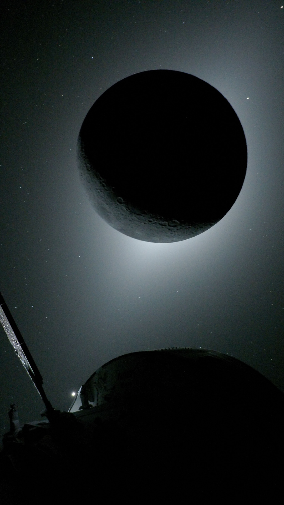
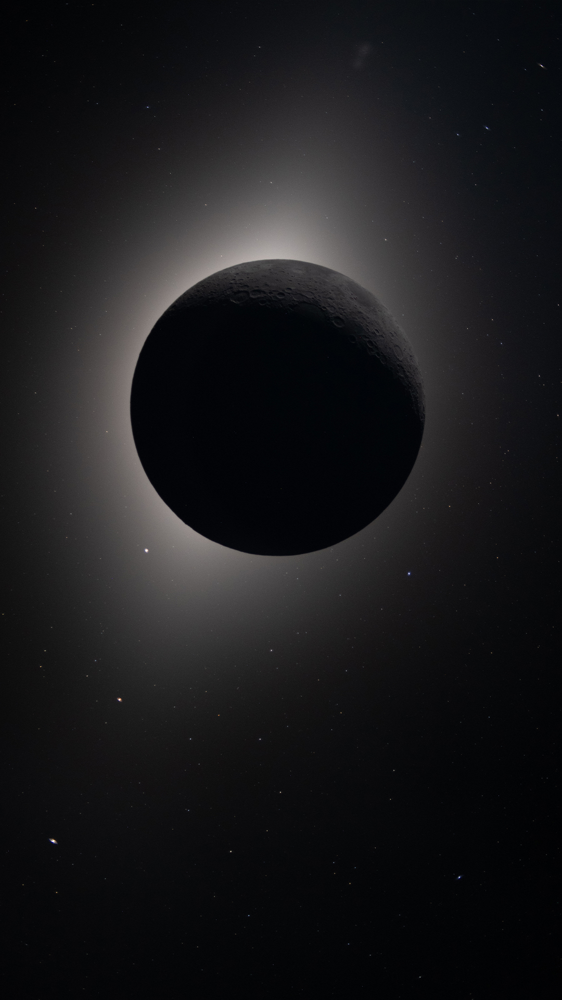

Earth: The Long Look Back
Click an image or its link to download the original file.






Lunar Flyby




Eclipse Studies


Return

◈ WINDOW LOG 02 ◈
Earth, Moon, eclipse, and return—every image is available to download.
Click an image or its link to download the original file.









